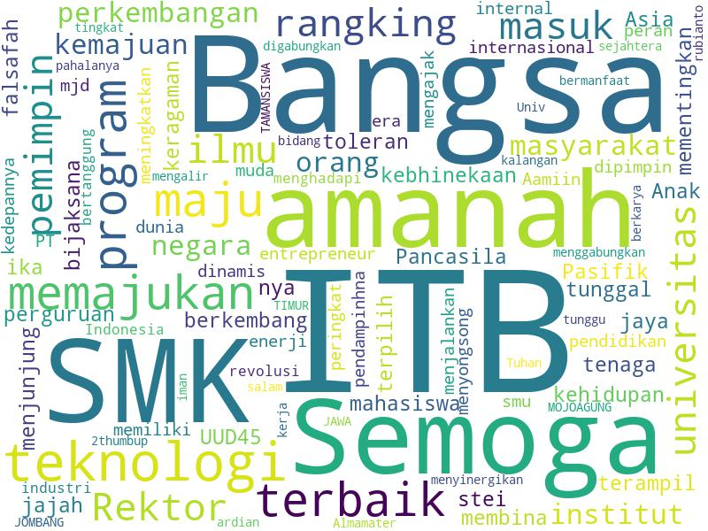
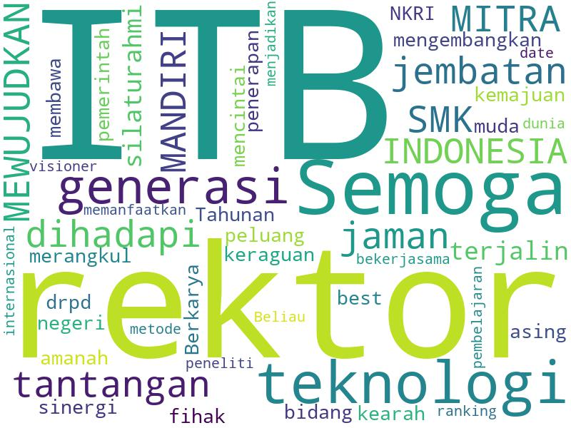

Last updated: 16-09-2019 18:28
Calon Rektor

Ary Setijadi Prihatmanto
29 Data-1 | 32 Data-2
Unofficial Survey pemilihan rektor ITB periode 2020-2025. Ingin berpartisipasi? Silahkan kunjungi survey [Anonim] atau dengan [Identitas (Email)]
Word-Cloud Harapan (Data-1)

Word-Cloud Harapan (Data-2)
